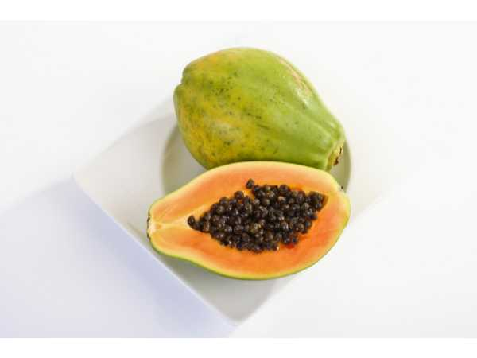

Carica papaya
Common Names: Papaya, Papaw, Pawpaw
Local Name: Pappali (Tamil), Papita (Hindi), Omakaya (Malayalam)
Family: Caricaceae
Origin: Southern Mexico and Central America
Plant Type: Fast-growing tropical tree (technically a large herb)
Variety: Red Lady, Solo, Coorg Honey Dew, Taiwan 786
Average Lifespan: 3–5 years in commercial cultivation; up to 20 years in ideal conditions
| Growth Habit | Single-stemmed, fast-growing, unbranched tree-like herb |
| Plant Size | 3–10 meters tall; hollow, soft trunk |
| Leaves | Large, deeply lobed, palmate, 50–70 cm diameter; clustered at top of trunk |
| Flowers | Dioecious or hermaphrodite; male flowers on long panicles, female flowers solitary near trunk |
| Flower Characteristics | Fragrant, waxy, cream-white to yellow; hermaphrodite varieties preferred for fruit production |
| Fruit | Large, oval to pear-shaped, 15–50 cm long; orange-yellow flesh with central seed cavity |
| Fruit Color | Green when unripe, yellow-orange when ripe |
| Seed Characteristics | Black, round, peppery-tasting seeds in central cavity; 200–500 seeds per fruit |
| Root System | Shallow, fibrous; sensitive to waterlogging and root rot |
| Climate | Tropical and subtropical; frost-sensitive |
| Temperature Range | 22–35°C ideal; damaged below 2°C |
| Rainfall Requirement | 1000–2000 mm annually; well-distributed |
| Soil Type | Well-drained sandy loam to loam; rich in organic matter; cannot tolerate waterlogging |
| Soil pH Preference | 6.0–6.5 |
| Sun Requirement | Full sun (6–8 hours daily) |
| Spacing | 2.5–3 meters between plants |
| Irrigation Method | Drip irrigation preferred; avoid wetting trunk |
| Water Requirement | Moderate; avoid waterlogging at all costs |
| Can it Grow in Pots? | Yes, dwarf varieties in large containers (50+ liters) |
| Fertilizer Schedule | Every 2 months; high nitrogen for vegetative growth, high potassium for fruiting |
| Recommended Organic Fertilizers | Compost, cow dung, vermicompost, wood ash for potassium |
| Pesticide Frequency | Monthly preventive; more frequent during wet season |
| Recommended Organic Pesticides | Neem oil, Bordeaux mixture, copper oxychloride |
| Mulching Practice | Mulch 1 meter radius around trunk; keep mulch away from stem |
| Common Pests | Papaya mealybug, fruit fly, aphids, mites, whiteflies |
| Common Diseases | Papaya ringspot virus (PRSV), powdery mildew, anthracnose, Phytophthora root rot |
| Disease Prevention & Remedies | Use virus-resistant varieties; control aphid vectors; ensure excellent drainage |
| Flowering Months | Year-round in tropical climates; begins 3–5 months after planting |
| Fruiting Season | Year-round; peak in summer and monsoon |
| Days to Harvest | 120–150 days from flowering |
| Harvest Indicators | Skin turns yellow-orange; slight softness when pressed; latex flow reduces |
| Average Yield per Plant | 30–50 kg per year (mature tree) |
| Pollination Type | Wind and insect pollinated; hermaphrodite varieties self-fertile |
| Pollination Notes | Plant 1 male for every 10 female plants if using dioecious varieties |
| Propagation by Seeds | Seeds germinate in 2–3 weeks; sow fresh seeds for best germination rate |
| Propagation by Cuttings | Rarely used; tip cuttings can be rooted but success rate is low |
| Water Usage | Moderate; efficient with drip irrigation |
| Companion Plants | Basil, marigold, legumes (nitrogen fixers) |
| Biodiversity Benefits | Flowers attract bees and butterflies; fast-growing canopy provides habitat |
| Commercial Production Regions | India (Andhra Pradesh, Tamil Nadu, Karnataka), Brazil, Mexico, Nigeria, Indonesia |
| Market Uses | Fresh fruit, raw green papaya for cooking, papain enzyme extraction |
| Processing Uses | Juice, jam, dried papaya, papain for meat tenderizers and pharmaceuticals |
| Market Value (Approx.) | ₹15–40 per kg (India); varies by variety and season |
| Symbolism | Called "fruit of the angels" by Christopher Columbus; symbol of tropical abundance |
| Traditional Uses | Green papaya used in traditional cooking (salads, curries); seeds used as digestive aid; leaves used as meat tenderizer |
| Calories | 43 kcal per 100g |
| Dietary Fiber | 1.7 g per 100g |
| Vitamin C | 62 mg per 100g (103% DV) |
| Vitamin A | 950 IU per 100g |
| Potassium | 182 mg per 100g |
| Antioxidants | Rich in lycopene, beta-carotene, and flavonoids |
| Other Key Nutrients | Papain enzyme, folate, magnesium, vitamin E |
| Digestive Health | Papain enzyme aids protein digestion; used for bloating and indigestion |
| Immune Support | Very high vitamin C content boosts immunity |
| Anti-inflammatory Properties | Papain and chymopapain reduce inflammation; used in wound healing |
| Heart Health | Lycopene and fiber support cardiovascular health |
Disclaimer: Information provided is for educational purposes only and not a substitute for medical advice.
Add your field observations here.